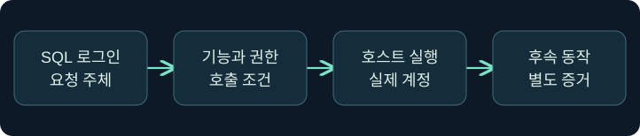
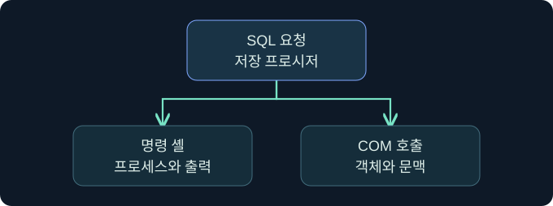
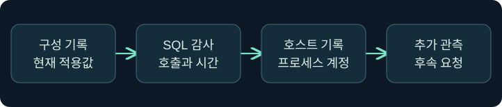

SQL 운영체제 실행 경계와 구성 감사
xp_cmdshell과 OLE의 요청·실행 및 적용 상태를 구분합니다.
1. SQL에서 운영체제로 넘어가는 경계를 찾습니다
가상의 문서 서비스에서 DB 관리자가 인스턴스 설정을 조회합니다. SQL 관리자라는 사실, 운영체제에서 실행되는 서비스 계정, 실제로 생성된 프로세스는 서로 다른 증거입니다. 이 강의에서는 xp_cmdshell과 OLE Automation이 그 경계를 어떻게 넘을 수 있는지 설명하고 기존 기록으로 검증합니다. 가상 사례이며 기능 활성화, 운영체제 명령, COM 객체 생성 및 대상 접근은 미실행입니다.

2. xp_cmdshell의 요청과 실행 신원을 구별합니다
xp_cmdshell은 SQL Server에서 Windows 명령 셸을 호출하고 일반적으로 출력을 행으로 반환하는 확장 저장 프로시저입니다. 호출자의 SQL 로그인과 생성된 Windows 프로세스의 계정은 다를 수 있습니다. 높은 권한의 호출에서는 SQL Server 서비스 계정이 실행 문맥이 됩니다. 승인된 비관리자 호출의 경우 실행 권한과 구성된 프록시 자격 증명 등 별도 조건이 필요하며, 프록시가 없는 비관리자 호출은 실패할 수 있습니다.
| 확인할 항목 | 의미 | 따로 확인할 근거 |
|---|---|---|
| SQL 로그인·역할 | 호출과 구성의 권한 문맥 | 승인된 권한·감사 |
| 서비스 계정 | 엔진의 운영체제 실행 신원 | 서비스 구성과 프로세스 기록 |
| 프록시 계정 | 지정된 호출에서 쓰이는 별도 신원 | 승인된 구성 및 실제 토큰 |
| 자식 프로세스 | 운영체제에서 관측된 동작 | 부모·자식, 계정, 시작 시각 |
서비스 계정을 일률적으로 SYSTEM으로 추정하지 않습니다. 서버마다 가상 계정, 전용 서비스 계정 등 실제 구성이 다릅니다.
3. OLE Automation은 COM 객체를 호출합니다
OLE Automation의 SQL 프로시저는 객체 생성, 메서드 호출, 속성 읽기·쓰기, 오류 정보 조회, 객체 해제 등 역할이 나뉩니다. 예를 들어 sp_OACreate와 sp_OAMethod의 감사 기록은 객체를 만들거나 메서드를 호출한 경로를 살필 단서입니다. 프로세스 내부에서 동작하는 COM 구성 요소도 있고 별도 프로세스에서 동작하는 구성 요소도 있습니다. 따라서 호출을 관찰해도 새 프로세스가 생겼다고 단정하지 않습니다. 메서드나 속성이 결과를 반환할 수 있으며, 그 반환과 셸의 표준 출력은 다른 개념입니다.

4. 구성값과 현재 적용값을 함께 읽습니다
다음은 문서화된 SQL Server 인스턴스에서 검토할 수 있는 미실행 읽기 전용 쿼리입니다. 현재 인스턴스의 구성 메타데이터만 대상으로 합니다.
SELECT name, value AS configured_value, value_in_use
FROM sys.configurations
WHERE name IN ('xp_cmdshell', 'Ole Automation Procedures')
ORDER BY name;value는 구성된 값이고 value_in_use는 현재 사용하는 값입니다. 차이가 있으면 그 시점의 운영 상태와 승인된 변경 이력을 대조합니다. 둘이 모두 0인 스냅샷은 관측 시점의 상태입니다. 더 이른 시각에 켜져 있었는지까지 확인하려면 이전 스냅샷이나 변경 로그가 필요합니다.
5. 실행에 관한 네 가지 결론을 구별합니다
| 가상 관측 | 확인된 범위 | 남은 확인 |
|---|---|---|
| 구성값 1, 적용값 0 | 값 차이가 관측됨 | 적용 시점과 변경 승인 |
| 적용값 1, 호출 기록 없음 | 기능이 현재 적용됨 | 호출 감사의 수집 범위 |
| 호출 기록, 프로세스 미확인 | SQL에서 요청한 단서 | 반환 상태·COM 실행 문맥·호스트 감사 |
| 자식 프로세스 관측 | 호스트에 프로세스가 생김 | SQL 호출과의 상관관계 및 후속 동작 |
SQL 오류 로그와 승인된 감사·Extended Events 설정, 운영체제 프로세스 기록을 함께 봅니다. 특정 이벤트가 수집되는지 먼저 확인합니다. 시간, 서버 인스턴스, 로그인, 프로세스 부모와 계정이 일치할수록 연결 근거가 강해집니다.
6. 공식 콘솔에서 세션 문맥 확인 위치를 읽습니다
실제 화면 145: Fortra Beacon Console
출처는 Fortra 콘솔 안내입니다. 2026년 11월 9일 현행 문서를 확인했습니다. 공식 일반 콘솔이며 버전에 따라 메뉴가 다를 수 있습니다. Cobalt Strike → Visualization → Session Table → 가상 LAB-AUDIT04 행 우클릭 → Interact를 선택하는 미실행 예입니다. 하단에 getuid를 입력하고 Enter를 누르는 위치를 봅니다. 이 값은 조사 세션의 보고 문맥을 확인하며 저장은 필요하지 않습니다. 위쪽 반환을 선택한 세션과 대조합니다. 이번 반환과 SQL 확장의 실제 구성 감사 화면은 확보하지 못했습니다.
7. SSMS에서 읽기 전용 감사의 확인 위치를 읽습니다
SSMS → Object Explorer → 승인된 엔진 선택 → New Query에서 4절의 쿼리를 검토하는 미실행 절차입니다. 현재 인스턴스를 먼저 확인하고 입력 창에 두 기능의 공식 설정 이름을 포함한 조회를 넣습니다. Execute가 조회 실행 버튼이며 별도 파일 저장은 필요하지 않습니다. Results에서 두 열의 차이를 확인하고 누락이나 권한 오류는 Messages를 봅니다. 가상 결과와 설정 상태 변경 사진은 확보하지 못했습니다. Microsoft SSMS 쿼리 안내
8. SQL 기록과 호스트 기록의 시각을 맞춥니다

가상의 감사에서 14시 05분에 설정 변경이 있고 14시 06분에 프로세스 생성이 있습니다. 두 기록이 같은 인스턴스와 호출 문맥을 가리키는지 대조합니다. 네트워크 요청이나 후속 세션이 보여도 별도의 동작으로 기록하며 해당 SQL 호출에서 발생한 것인지는 추가 증거로 확인합니다.
9. 상태 복구 검증에서 항목을 혼동하지 않습니다
xp_cmdshell, Ole Automation Procedures, clr enabled는 서로 다른 옵션입니다. 한 옵션이 0으로 관측됐다는 사실로 다른 옵션의 복구를 판단하지 않습니다. 변경 요청과 실제 적용을 구분하고, 승인된 기준선과 같은 시각·인스턴스의 상태를 비교합니다. 이 강의는 기존 자료의 검토로 한정합니다.
10. 복습과 즉시 해설
복습 1. SQL 로그인과 Windows 프로세스 계정은 항상 같나요?
해설: 서비스 또는 프록시 계정의 문맥을 별도로 확인합니다.
복습 2. 비관리자에게 실행 권한만 부여되면 충분한가요?
해설: 기능 상태와 프록시 구성 같은 별도 조건을 확인합니다.
복습 3. 구성값 1이면 현재 적용값도 1인가요?
해설: 두 열을 함께 읽어 현재 상태를 확인합니다.
복습 4. OLE 호출이 곧 새 프로세스인가요?
해설: COM 실행 문맥과 실제 호스트 기록을 확인합니다.
복습 5. 설정이 현재 꺼져 있으면 과거에도 꺼져 있었나요?
해설: 이전 상태는 변경 이력과 이전 스냅샷에서 확인합니다.
복습 6. OLE에 결과 반환이 없다고 일반화하나요?
해설: 메서드·속성의 반환은 셸 출력과 다른 형태로 존재할 수 있습니다.
복습 7. CLR 상태로 OLE 원복을 확인하나요?
해설: 각 옵션의 적용값을 독립적으로 대조합니다.
복습 8. 콘솔 표시 계정이 SQL 서비스 계정인가요?
해설: 콘솔 문맥이며 SQL 서비스 구성과 별도로 확인합니다.
11. 공식 자료와 확인 범위
2026년 11월 9일 공식 자료를 확인했습니다. SQL Server·SSMS·Cobalt Strike 실행과 정책 변경, 운영체제 명령 및 대상 접근은 미실행입니다.